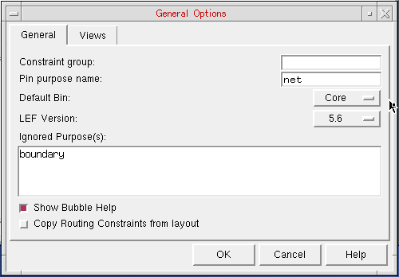
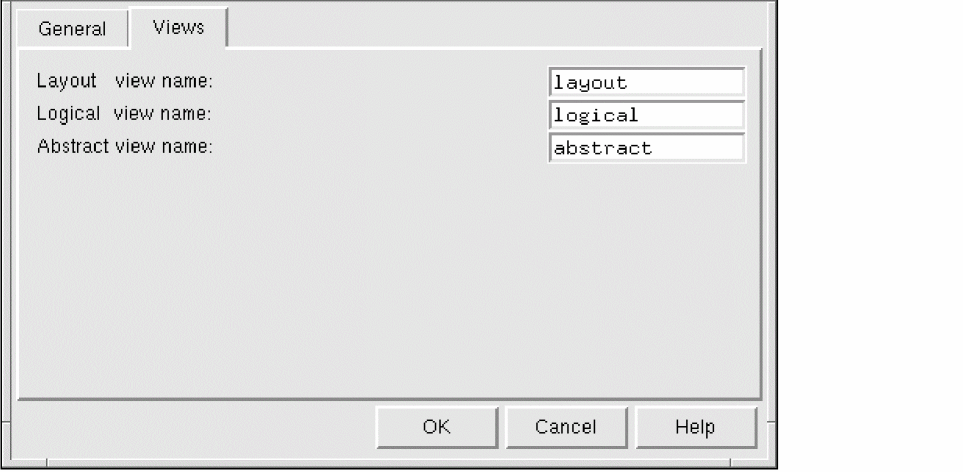

Specifying Global Options in General Options form
在 General Options 中指定全局选项
The General Options form lets you view and change options that apply to the overall Abstract Generator. The options are split into different categories, accessed using the Views and General tabs in the General Options form.
General Options 窗体用于查看与更改应用于整个 Abstract Generator 的选项。选项按不同类别划分，可通过 General Options 窗体中的 Views 与 General 标签页访问。
-
Choose File – General Options command.
选择 File – General Options 命令。
The General tab provides the options to set the default bin, LEF version, and the purpose name(s) to be ignored during the flow steps.
General 标签页提供用于设置默认 bin、LEF 版本，以及在流程步骤中需要忽略的 purpose name 的选项。

-
Select Constraint group to specify the name of the constraint group of the technology database.
选择 Constraint group 指定 technology database 的 constraint group 名称。 -
Select Pin purpose name to set the purpose for pins on the final abstracts. The default purpose is
net.
选择 Pin purpose name 为最终 abstracts 上的 pins 设置 purpose。默认 purpose 为net。 -
Select Default Bin to specify the default bin into which library cells are imported.
选择 Default Bin 指定导入库 cell 时使用的默认 bin。 -
Select LEF Version to set the version of LEF to be used by Abstract Generator. You can select from
5.4,5.5,5.6,5.7. The default version of LEF used by Abstract Generator is5.7for mature nodes and5.8for advanced nodes.
选择 LEF Version 设置 Abstract Generator 使用的 LEF 版本。可从5.4、5.5、5.6、5.7中选择。Abstract Generator 默认的 LEF 版本：成熟工艺节点为5.7，先进工艺节点为5.8。 -
Select Ignored Purpose(s) to specify the purpose name(s) that you want to be ignored when a layer name without a qualifying purpose name is specified for the Pin, Extract, and Abstract steps.
选择 Ignored Purpose(s) 指定在 Pin、Extract、Abstract 步骤中，当 layer name 未带 purpose name 时需要忽略的 purpose name。 -
Select Show Bubble Help to display bubble help for various GUI options. It is selected by default. You can turn it off if required.
选择 Show Bubble Help 可为各 GUI 选项显示气泡提示，默认开启；需要时可关闭。 -
Select Copy Routing Constraints from layout to enable Abstract Generator to copy the mixed signal routing constraints from the layout view to the abstract view.
选择 Copy Routing Constraints from layout 允许 Abstract Generator 将 layout view 中的混合信号布线约束复制到 abstract view。
-
Select Constraint group to specify the name of the constraint group of the technology database.
-
In the Views tab, you can specify the file names that Abstract Generator would use while creating layout, logical, and abstract database files. The Logical file name field can also be used to specify an existing logical view (for example,
schematicorsymbol) from which logical information is to be picked up.
在 Views 标签页中，你可以指定 Abstract Generator 在创建 layout、logical 与 abstract 数据库文件时使用的文件名。Logical file name 字段也可用于指定已有的 logical view（例如schematic或symbol），以便从中获取逻辑信息。

-
Select Layout View Name to specify the view name for layout information. For example, if you import GDSII layout data into Abstract Generator, this is the name used for the database files that are generated.
选择 Layout View Name 指定 layout 信息的 view 名称。例如，如果将 GDSII 版图数据导入 Abstract Generator，该名称会用于生成的数据库文件。 -
Select Logical View Name to specify the view name for logical information.
选择 Logical View Name 指定逻辑信息的 view 名称。 -
Select Abstract view name to specify the name used for the abstract views created by Abstract Generator.
选择 Abstract view name 指定 Abstract Generator 创建的 abstract views 所使用的名称。
-
Select Layout View Name to specify the view name for layout information. For example, if you import GDSII layout data into Abstract Generator, this is the name used for the database files that are generated.
-
Click OK.
点击 OK。
Related Topics
相关主题
Return to top